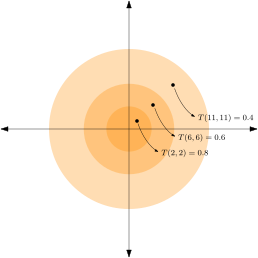

Analytic geometry and linear algebra#
Euclidean geometry in two dimensions#
Many quantities in our physical world, such as the temperature a given place, or its altitude, are described by a single number. Such quantities are deemed scalar. Others however require more information to model: for example, to describe the flow of air at a point we must specify not only the “intensity” or magnitude of the flow but also its direction. Mathematically, such a quantity is modeled by a vector in the Euclidean vector space (usually \(\mathbb{R}^2\) or \(\mathbb{R}^3\)). Such Euclidean vector spaces will be the primary focus of this chapter.
We start with a familiar Euclidean space: the infinite plane, a two-dimensional world. Our first concern is to establish a coordinate system. We may choose some arbitrary position in this plane to be the origin, to which we assign the coordinate \((0,0)\). The rest of the positions are then given coordinates in \(\mathbb{R}^2\), intuitively measuring the “vertical” and “horizontal” displacement from the origin: this is the familiar Cartesian coordinate system.
We should also establish a notion of distance: given two arbitrary points, how far are they from eachother? The answer is given by applying the Pythagorean theorem:
Therefore we may define the Euclidean distance between two points \(p,q\) as:
Scalar quantities are simply real numbers attached to each point \((x,y)\). For example, we can imagine running a heater at the origin for a few minutes and then measuring the resulting temperatures \(T(x,y)\) in space:
{kind=link}
On the other hand, quantities such as the flow of air are described by an assignment of a vector, a directed line segment, to each point:

Focusing on a single point, take the origin \((0,0)\) for simplicity, we can consider a number of vectors emanating from it:
{kind=link}
These vectors are completely determined by their endpoint coordinates, so that we can write \(\vec{v} = (v_1,v_2)\) for the vector with coordinates \(x,y\).
What are the possible operations we can apply to these vectors? We can multiply a vector by a scalar (an element of \(\mathbb{R}\)):
Geometrically this corresponds to stretching and flipping the vectors:
{kind=link}
Try playing around with the value of \(a\) below:
Show code cell source
from IPython.display import IFrame
IFrame("https://www.geogebra.org/graphing/wrnjpgny", 900,400)
We can also add vectors two vectors \(\vec{v}=(v_1,v_2), \vec{u}=(u_1,u_2)\), using the parallelogram rule:
Geometrically, the sum looks like:
Show code cell source
from IPython.display import IFrame
IFrame("https://www.geogebra.org/graphing/nyteysw8", 900,400)
Euclidean vector spaces#
Collecting together all possible vectors that emanate from a point into a set \(V\) equipped with the operations of scalar multiplcation and vector addition yields the very important notion of a vector space
Definition 4 (Vector space (over \(\mathbb{R}\)))
A vector space over \(\mathbb{R}\) is a non-empty set \(V\) together with two binary operations \(\cdot: \mathbb{R} \times V \rightarrow V\) (scalar multiplication) and \(+: \mathbb{V} \times \mathbb{V} \rightarrow V\) (vector addition) which satisfy:
For every \(\vec{u},\vec{v},\vec{w} \in V\): \(\vec{u}+(\vec{v}+\vec{w})=(\vec{u}+\vec{v})+\vec{w}\).
For ever \(\vec{u},\vec{v} \in V\): \(\vec{u}+\vec{v}=\vec{v}+\vec{u}\).
There exists an element \(\vec{0} \in V\) such that for all \(v \in \mathbb{V}\), \(\vec{v} + \vec{0} = \vec{v}\).
For every \(\vec{v} \in V\), there exists an element \(\vec{v'} \in \mathbb{V}\) such that \(\vec{v} + \vec{v'} = 0\). We usually notate \(\vec{v'} = -\vec{v}\).
For every \(a,b \in \mathbb{R}\) and \(\vec{v} \in \mathbb{R}\): \(a(b\vec{v})=(ab)\vec{v}\).
For every \(\vec{v} \in V\): \(1\vec{v} = v\).
For every \(a \in \mathbb{R}\) and \(\vec{u},\vec{v} \in V\): \(a(\vec{u}+\vec{v})=a\vec{u} + a\vec{v}\).
For every \(a,b \in \mathbb{R}\) and \(\vec{v} \in V\): \((a+b)\vec{v}=a\vec{v} + b\vec{v}\).
A fundamental result of linear algebra is then that every Euclidean vector in this vector space can be decomposed into a linear combination of scalar multiplications and additions of a fixed number of vectors: the basis. That is, there exists a set \(B = \{\vec{i}, \vec{j}\}\) of basis vectors such that every \(v \in V\) can be written as a sum of scalar multiples of elements in \(B\):
We usually list the coefficients of these linear combinations in collumn vector notation:
Indeed, all this time we’ve been using (implicitly) the standard basis for \(\mathbb{R}^2\) which consists of two vectors of length \(1\) that start at \(0\) and end at \((1,0)\) and \((0,1)\). In collumn vector notation, these are \(\vec{i} = \begin{pmatrix}1 \\ 0 \end{pmatrix}\) and \(\vec{j} = \begin{pmatrix} 0 \\ 1 \end{pmatrix}\).
Linear maps and their matrices#
Given two vector spaces \(V, W\), we can consider the set of functions \(f: V \rightarrow W\) that transform vectors of \(V\) to vectors of \(W\) and respect the operations of scalar multiplication and vector addition:
Definition 5 (Linear map)
A linear map is a function \(f: V \rightarrow W\) such that for any two vectors \(\vec{v}, \vec{u} \in V\) and any \(c \in \mathbb{R}\):
\(f(\vec{v} + \vec{u}) = f(\vec{v}) + f(\vec{u})\),
\(f(c\vec{v}) = cf(\vec{v})\).
The axioms of vector spaces then imply that linear maps conserve linear combinations:
Since, as we mentioned before, every vector can be written as a linear combination of the two basis vectors of \(\mathbb{R}^2\), to understand a linear map we need only understand its effect on the basis vectors \(\vec{i}, \vec{j}\). Indeed, writing out the result of \(f\) to the basis vectors we have:
These four coefficients \(c_{1,1}, c_{1,2}, c_{2,1}, c_{2,2}\) completely define the map \(f\)!
It is convenient to collect these coefficients into an object called the matrix of the map \(f\):
Let us consider a simple example: the map \(R\) that sends \(\vec{i}\) to \(\vec{j}\) and \(\vec{j}\) to \(\vec{i}\):
Therefore we have \(c_{1,1} = 0, c_{1,2} = 1, c_{2,1} = 1, c_{2,2} = 0\) and the matrix of \(R\) is:
What is the result of \(f\) applied to an arbitrary vector, say \(\vec{v} = \begin{pmatrix} \sqrt{2} \\ \pi \end{pmatrix}\)? Using the decomposition of \(\vec{v}\) into the basis vectors we compute:
There’s an easier way to do this calculation: matrix-vector multiplication!
Using this, we can easily calculate \(R(\begin{smallmatrix} \sqrt{2}\\ \pi \end{smallmatrix})\):
Geometrically, the result of applying \(R\) is a reflection:
Show code cell source
from IPython.display import IFrame
IFrame("https://www.geogebra.org/graphing/xup8sbkf",900,500)
The rest of this section is dedicated to a discussion of important classes of linear maps and their matrices: scaling, the Euclidean transformations of rotations and reflections, and projections.
Scalings#
As we’ve mentioned before, scaling an individual vector \(\vec{v}\) by a factor \(a \in \mathbb{R}\) is achieved by scalar multiplication \(a\vec{v}\). Applying this transform on the basis vectors we find:
The corresponding matrix is therefore:
and its effect on various vectors can be seen in the following figure:
Show code cell source
from IPython.display import IFrame
IFrame("https://www.geogebra.org/graphing/sqtxyazp",900,500)
Rotations and reflections#
Rotations are easier to analyse if we adopt an alternative coordinate system: polar coordinates. Instead of describing points by pairs \((x,y)\) of distances along the two axes, we describe them by pairs \((r, \phi)\) of an angle \(\phi \in (-\pi,\pi]\) from the \(x\)-axis and a radius \(r\). The two coordinate systems \((x,y)\) and \((r,\phi)\) are related by:
as demonstrated here:

Rotations are easily carried out in polar coordinates: rotating a point \(p = (r, \phi)\) by \(\theta\) degrees results in the point \(p' = (r, \phi + \theta)\):
Show code cell source
from IPython.display import IFrame
IFrame("https://www.geogebra.org/graphing/ffbrpfqr",900,500)
Let us now investigate how a rotation operation \(R_{\theta}\) affects the two basis vectors \(\vec{i}, \vec{j}\). First, let us convert their coordinates from Cartesian to polar:
Rotating by an angle \(\theta\) then yields:
Converting back to Cartesian coordiates we therefore have:
Using the basic trigonometric identities \(\cos \left(\frac{\pi}{2} + \theta \right) = -\sin\theta\) and \(\sin \left(\frac{\pi}{2} + \theta \right) = \cos\theta\) we finally have:
The corresponding matrix is therefore:
Its effect on our example set of vectors is:
Show code cell source
from IPython.display import IFrame
IFrame("https://www.geogebra.org/graphing/gvw2rqys",900,500)
Composing linear maps#
Consider two arbitrary linear maps \(f(\vec{v}), g(\vec{v})\) which act on the basis states as:
Composing \(f\) with \(g\) yields a new linear map \(f(g(\vec{v}))\) whose effect on the basis vectors is:
and
Collecting these coefficients in a matrix we have:
With this in mind, let us define the operation of multiplication of two matrices as:
The composing two linear maps \(f, g\) corresponds to multiplying their matrices \(M_f, M_g\).
Projections#
Projections are a class of linear maps particularly important for computer graphics.
Definition 6 (Projection)
A linear map \(P: V \rightarrow V\) is a projection if \(P(P(\vec{v})) = P(\vec{v})\). In terms of the matrix \(M_P\), this condition becomes \(M_{P}^{2} = M_P\).
More on bases#
So far, we’ve worked with the basis given by the set \(\{\vec{i},\vec{j}\}\) of vectors with coordinates \((1,0)\) and \((0,1)\) in Cartesian coordinates. An important fact of linear algebra is the existence of other bases, infinitely many of them in fact!
To state the above fact more precisely, we’ll need to employ the following notion of linear independence:
Definition 7 (Linear independence)
Let \(S = \{\vec{v_1},\dots,\vec{v_n}\}\) be a set of vectors of cardinality \(\lvert S \rvert = n \in \mathbb{N}\). Then \(S\) is linearly independent if there exist \(a_1, \dots, a_n \in \mathbb{R} \setminus \{0\}\) such that:
The precise statement of the above fact is then:
Lemma 6
Let \(S = \{\vec{v_1},\vec{v_2}\}\) be a set of vectors of cardinality 2. Then \(S\) is a basis if and only if it is linearly independent.
This is equivalent to saying that \(\vec{v_1}\) and \(\vec{v_2}\) do not lie on the same line.
Therefore, any two non-colinear vectors define a basis, an alternative coordinate system for us to compute with:
briefly describe without much calculation
Geometry in higher dimensions#
Generalising from the case of the infinite line, we can consider a plan or a higher-dimensional space with \(n\) degrees of freedom, whose coordinate system is given by \(\mathbb{R}^n\). This is called the \(n\)-dimensional Euclidean space.
Distances in \(n\)-dimensional Euclidean space are given by:
Definition 8 (Euclidean norm)
Let \(p = (p_1, \dots, p_n), q = (q_1, \dots, q_n) \in \mathbb{R}^n\) be two points in \(n\)-dimensional Euclidean space. The Euclidean distance between \(p,q\) is defined to be:
One can quickly verify that this reduces to \(d(p,q) = \lvert p - q \rvert\) for \(n=1\), in agreement with the previous section.
The geometric interpretation of a vector in an Euclidean space then becomes:
Definition 9 (Vector (Euclidean))
A vector \(\vec{ab}\) is a line segment between two points \(a\) and \(b\), directed from \(a\) to \(b\). Its length (or norm, or magnitude) \(\left\lVert \vec{ab} \right\rVert\) is the Euclidean distance \(d(a,b)\).
We now focus on operations on vectors. First of all, vectors can be multiplied by a scalar (in our case, a real number). Intuitively, this corresponds to “stretching” and potentially flipping (if the scalar is negative) the direction of a vector:
Definition 10 (Scalar multiplication)
Given a vector \(\vec{ab}\) and a scalar \(c \in \mathbb{R}\), we define:
$$a\vec{ab} =
Exercise#
Define the one-dimensional Euclidean space. What is the difference between vectors and scalars in this case?